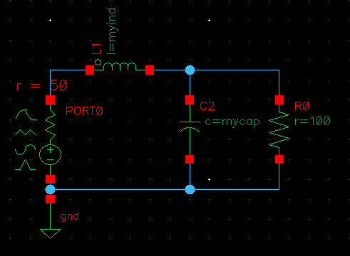
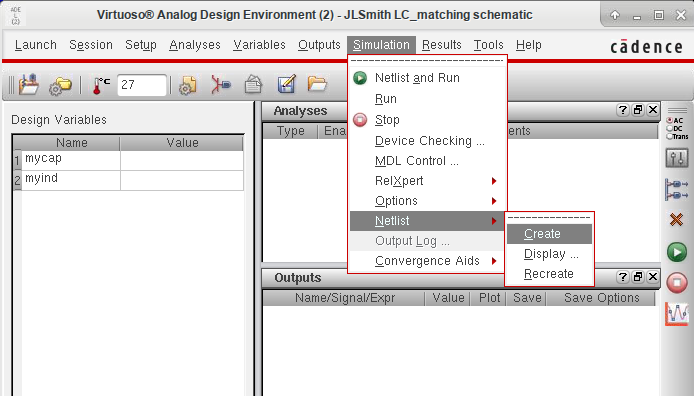
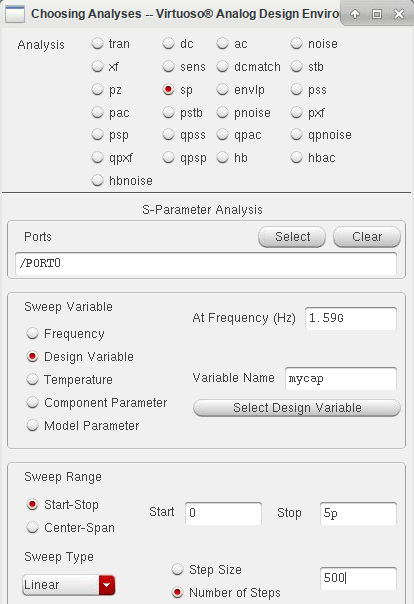
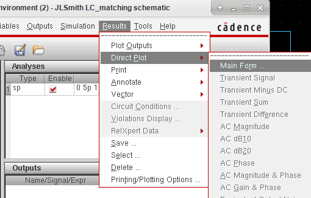
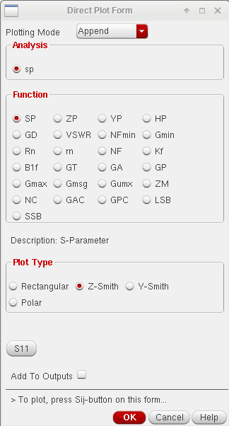
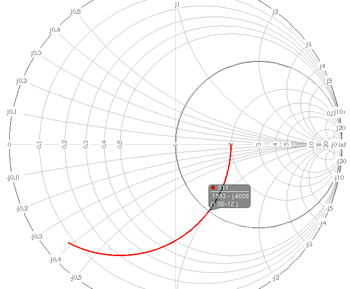

S-parameter simulation with Spectre
© Jean-Louis Noullet 2017
The purpose of the S-parameter simulation with Cadence Spectre is to reproduce
the measurements which can be done in the laboratory with a VNA (Vector Network Analyzer),
and display the results on a Smith Chart.
Special signal sources called
ports are used and for each port the simulator performs an
AC analysis, while keeping the other ports passive.
Simulation workflow
- create a schematic, including at least one port symbol instance
- open the ADE tool and generate the netlist
- give default values to the design variables if relevant
- choose and parametrize the sp analysis
- run the simulation
- plot the results
Steps Details
Schematic

- The signal source is a port, from library analogLib.
The port contains a generic voltage source and an internal resistance (here 50 Ohms)
- In this example all elements are technolgy independant parts from analogLib
- In this example two elements have variable values, which can possibly be swept during the analysis
Do not forget :
- to put a ground terminal
- to do a Check and Save before continuing
Netlist

This window is obtained from the schematic window using Launch ADE L.
A side effect of the netlist generation is the creation of design variables appear on the left.
Always enter a default value for each of these variables, even if you plan do sweep it.
SP Analysis

- Select the sp analysis
- include at least one port name in the list (with a leadin '/')
- choose what to sweep
- choosing frequency will work like a regular AC analysis
- In the example, a design variable is swept, which implies operation at a fixed frequency
- carefuly determine the sweep range and step (preferably stay between 500 and 5000 steps)
Then run the simulation (Simulation --->Run in the ADE L window), check the absence of errors.
Plot the results

From the ADE L window, reach the Direct Plot Main Form:

Fill the Direct Plot Form
- as a function, just choose SP
- as a plot type, choose Z-Smith or Y-Smith (you will be able to change later anyway)
- clck the S11 button, the graph should be displayed immediately

The reflexion coefficient
S at the port terminals is plotted in the complex plane, yielding the red curve.
The background is a normalized Z-Smith chart.
Normalized mean that the Z scales are labelled considering a reference impedance of 1 Ohm.
(You may disable the normalization in order to have the labels drawn according to the actual port impedance.)
The curve starts on the real axis, at the intersection with the
constant real impedance part circle labelled 2,
which denotes a pure resistance of 2.0*50 Ohms (the inductance has a negligible effect due its default value of 1pH).
Then, while the parallel capacitance increases, the curve goes down ("capacitive half circle").
The curve follows a
constant admittance real part circle, since the parallel capacitor does not change the real part of the admittance.
You may switch to a Y-Smith chart in order to view the admittance circles (Graph-->Properties-->Graph Options-->Grid Type).
By moving the cursor along the curve, it is possible to read the local value of the swept variable (1pF in the example).